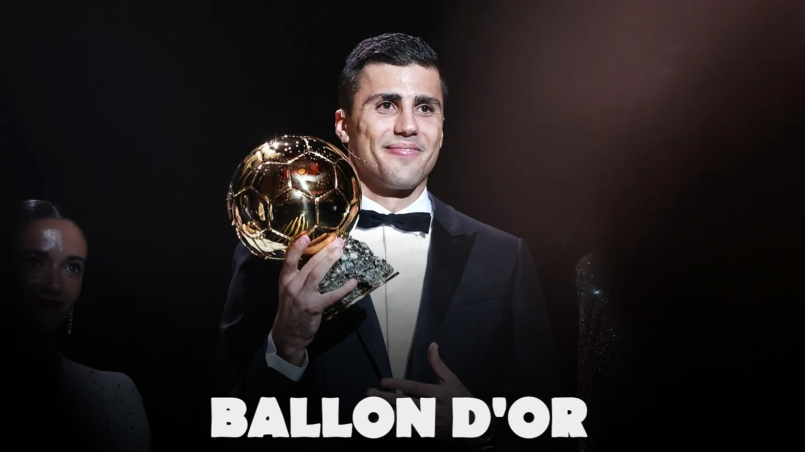

Football et Polémique : le Ballon d'Or 2024, un triomphe contesté pour Rodri.
Le 28 octobre 2024, le prestigieux Ballon d'Or a été attribué à Rodri, le milieu de terrain espagnol de Manchester City, lors d'une cérémonie qui a suscité de vifs débats. Loin de faire l’unanimité, cette victoire a engendré des réactions contrastées, en particulier chez les supporters de Vinícius Júnior, considéré par beaucoup comme le favori pour ce prix.
Un favori inattendu
Alors que les fans de Real Madrid attendaient de voir Vinícius couronné pour ses performances exceptionnelles en Liga et en Ligue des Champions, c'est finalement Rodri qui a été distingué pour ses contributions décisives, incluant son rôle majeur dans la victoire de l'Espagne à l'Euro 2024 et les succès de Manchester City. Ce couronnement a marqué une rupture symbolique avec l’ère dominée par Messi et Ronaldo, pour la première fois absents de la liste des 30 finalistes, annonçant une nouvelle génération d'élites du football.
Le boycott de Real Madrid
En signe de protestation, aucun représentant de Real Madrid n’a assisté à la cérémonie parisienne. L’entraîneur Carlo Ancelotti, primé comme meilleur coach de l’année, a décliné la remise de son prix en personne, se contentant d’un message de remerciement adressé à ses joueurs, notamment à Vinícius et Dani Carvajal. Ce boycott silencieux a mis en lumière le mécontentement du club espagnol et souligné les tensions autour de la remise du trophée cette année.
Un impact durable pour le Ballon d'Or ?
Le Ballon d'Or 2024 s'inscrit dans une série de controverses qui ont souvent émaillé ce prix prestigieux. Les partisans de Rodri saluent son professionnalisme et ses succès internationaux, tandis que d'autres voient en ce choix une injustice envers Vinícius.
Cette édition alimente les débats sur les critères de sélection et la place des réalisations individuelles par rapport aux succès collectifs dans la course au Ballon d'Or.